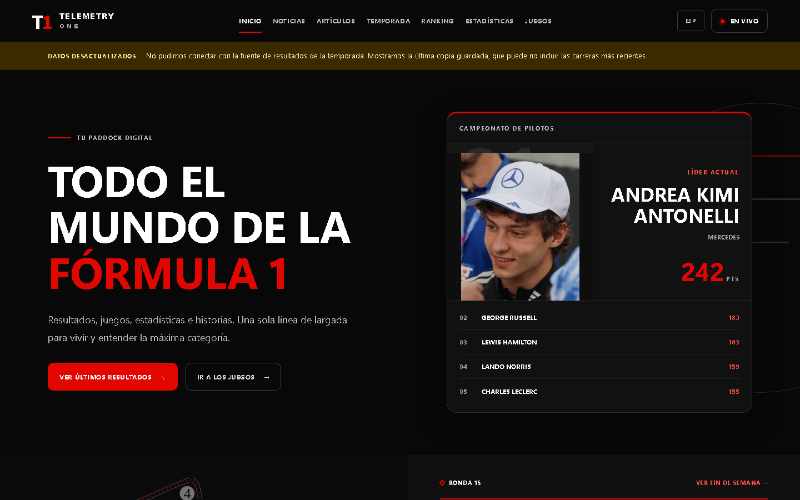
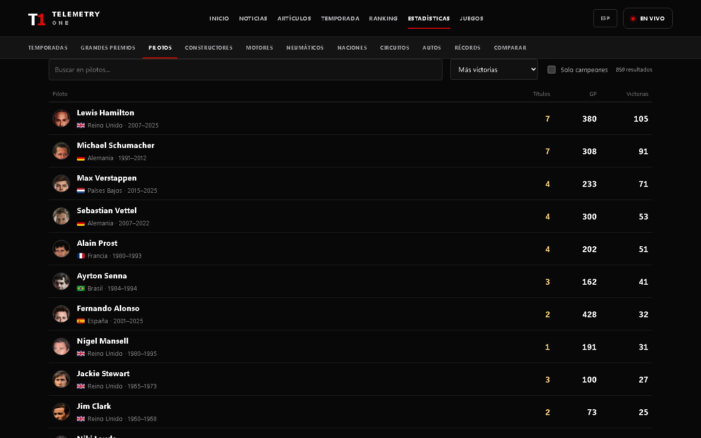
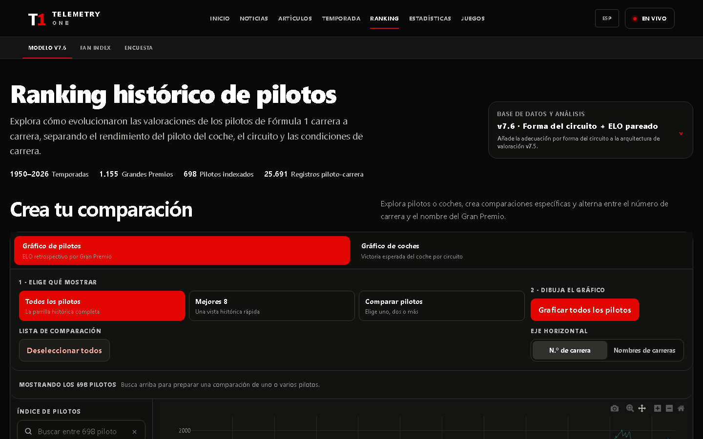

From separate experiments to a navigable ecosystem.
My interest in motorsport became a digital product of my own: Telemetry One brings current events, results, profiles, history, analytical models and games into one experience. The challenge was turning years of curiosity, data and experiments into an ecosystem that invites people to explore Formula 1 from different angles.

The information existed. What it needed was a way to explore it.
Recent results, the historical archive, the retrospective ranking and the games began as separate projects. Bringing them together meant resolving different timescales, sources and behaviors while keeping the experience clear.
The season as an entry point
Calendar, results and standings make it possible to follow the present and open natural paths toward related drivers, teams and races.
76 connected seasons
Seasons, races, drivers, constructors, engines, tires, circuits and cars are generated from identifiable snapshots and form a navigable historical network.
Compare beyond the result
The v7.6 ranking and expected probabilities add an analytical layer for exploring performance, context and careers across eras.
One entrance, several levels of depth.
The primary navigation supports different intentions: follow the season, look up an entity, compare careers, read a story or play. Inside the archive, a second layer moves through seasons, Grands Prix, drivers, constructors, engines, tires, nations, circuits, cars and records.
Data that keeps its meaning
The interface distinguishes confirmed results, available information and model outputs. That decision keeps an extensive database readable and enables comparison without losing the context behind each figure.
Links as part of the model
Pages are not isolated profiles. A race connects its season and participants; a chassis links the years in which it appeared; a driver joins official results with the analytical series that represents that career.

Generate, verify and then present.
Normalize sources
F1DB powers the historical archive; attributed sources provide information and media that the base dataset does not include.
Build snapshots
Separate scripts generate history, race weekends, tires, records and articles. Analytical models are prepared before the visit.
Verify invariants
Validation tasks check totals, links, special historical cases, pole-position rules and model coverage before publication.
Serve with Next.js
Dynamic routes read versioned artifacts and turn them into fast, linkable and search-friendly pages.

The model is part of the experience.
The ranking lets visitors select a calculated version, compare drivers or cars and switch the axis between race number and Grand Prix name. Each point can expose race context and model variables.
Official statistics and analytical outputs keep their own meaning: titles, wins and classifications belong to the archive; Elo, xP and expected-win probability belong to the model.
The portal also supports independent products
The games and Predestinato live in their own repositories. Telemetry One presents them as consistent destinations without tying their development cycle to the encyclopedia.
Every screen comes from a reproducible chain of decisions.
The work starts before the visual component. Scripts take structured sources, normalize names, identifiers and relationships, and produce versioned snapshots. That layer prevents the same entity from fragmenting because of small historical differences and lets drivers, teams, chassis, engines, circuits and seasons connect through stable routes.
Specific artifacts are then generated for each family of pages. The calendar needs chronological order and race states; a driver profile needs a career and relationships; a historical index needs search and sorting; the visualizer needs calculated series and model metadata. Preparing those outputs during the build keeps navigation fast and analytical logic out of the user’s visit.
The Next.js layer turns those artifacts into dynamic routes with metadata, internal links and bilingual structure. Spanish and English share the same information model while keeping their own titles, descriptions and labels. Before publication, validation checks links, counts, coverage, historical rules and edge cases to find contradictions between the database and the interface.
Ingest
Collect sources while preserving attribution, dates and provenance so every data point retains context.
Normalize
Resolve identifiers and relationships before they reach interface components.
Generate
Create snapshots and pages from shared templates instead of copying information by hand.
Verify
Check links, totals, translations and historical exceptions before deployment.
Make decades of motorsport navigable without reducing them to a table.
The interface was designed around real questions. Someone may want to know what happened this weekend, follow a driver’s career, compare two eras, understand a model or simply play. Instead of forcing one path, the home page works as a distributor and each page offers links that continue the investigation from the current context.
Follow the season
Calendar, results and standings prioritize the latest information and open routes to participants, teams and circuits.
Explore relationships
Indexes connect entities and decades so history can be discovered through navigation, search or comparison.
Explain the metric
Versions, coverage and variables accompany the chart so visitors understand what each result represents.
Tell a story
Articles use the same archive as their base and turn a data relationship into a readable narrative.
Participate in the universe
Interactive products turn interest into decisions, simulation and creative exploration.
Preserve context
Routes and internal links avoid dead ends and make every discovery lead naturally to the next one.
A personal project combining product, data and creativity.
- Product design: I turned different needs—following, looking up, comparing, reading and playing—into coherent paths inside one interface.
- Data architecture: I organized current sources, historical snapshots and analytical results so each layer keeps its context.
- Visualization: rankings, profiles and comparison tools translate complex models into experiences that can be explored without knowing their implementation.
- Ecosystem building: Telemetry One connects encyclopedia, analysis and independent games, and can absorb new experiments without losing its identity.
From archive to live portal.
Since the first version of this article, Telemetry One has grown from a navigable archive into a portal that follows every race weekend. It launched on its own domain, telemetry-one.com, and every page is prerendered in Spanish and English.
The race, lap by lap
OpenF1 data synced to the replay clock: the selected driver’s telemetry, team radio, incidents, tyre stints, pit-stop projection, a satellite rain map and a 3D map with the cars on the real track using MapLibre.
What happened versus what was expected
Each race compares every driver’s finish with what their grid slot predicted. The adjustment was validated on 2024–2025: 2.28 places of mean error versus 2.59 for the raw grid. It adds overtakes, records, trivia, a 0–10 score per driver and shareable images.
Publishing without intervention
A weekly Vercel cron and a GitHub Actions schedule check whether the report is complete and send a single alert per race, deduplicated in a Neon database.
Editorial library
Historical and technical articles with cited sources, circuit histories and hundreds of credited car and driver photographs stored in the repository instead of hotlinked from third parties.